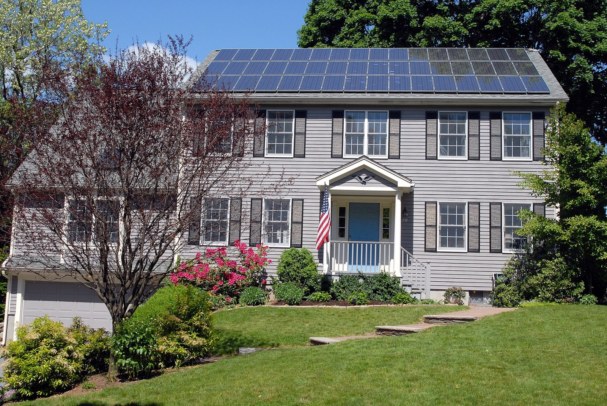

Wie viel von der Sonnenenergie kommt beim Heben einer Last wirklich an?
Schreib deine Vermutung ins Heft.
Kennst du das?
Solarzellen auf Hausdächern.
Ein Spielzeugkran mit Elektromotor.
Windräder am Horizont.
Erarbeitung · Bild
Experimentieren mit Energiewandlern
Solarzellen auf dem Dach

Ein Wohnhaus mit Solarmodulen auf der ganzen Dachfläche.
Welche Energie geht in die Solarmodule hinein, welche kommt heraus? Was ist nachts?
Auflösung
Hinein: Lichtenergie (Strahlungsenergie) der Sonne, heraus: elektrische Energie (ein Teil wird zu Wärme). Nachts kommt kein Licht an, also auch keine elektrische Energie – ein Energiewandler erzeugt keine Energie, er wandelt nur um.
Die Solarzelle wandelt Licht in elektrische Energie.
Der Motor wandelt elektrische in kinetische Energie.
Die Last gewinnt potentielle Energie.
Bei jedem Wandler geht ein Teil als thermische Energie ab.
Experiment · Planung
Experimentieren mit Energiewandlern
Forscherfrage
Wovon hängt ab, wie schnell der Solarkran eine Last hebt?
Plant euren Versuch
Was verändert ihr — und was haltet ihr gleich?
Woran erkennt ihr, ob die Last schneller gehoben wird?
Welche Größen messt ihr, um die Leistung zu bestimmen?
Wie notiert ihr die Werte übersichtlich?
Sicherheit: Die Lampe wird heiß — nicht anfassen und nichts Brennbares davorlegen.
Experiment · Durchführung
Experimentieren mit Energiewandlern
Solarzelle, Motor und Kran
Art
Schülerexperiment in Gruppen
Zeitbedarf
ca. 30 min
Material
Solarzelle, kleiner Elektromotor mit Seilrolle, Faden, Massestücke, Lampe, Maßband, Stoppuhr
Sicherheit
Lampe wird heiß
Prüft euch selbst
Verändert ihr wirklich nur eine Sache?
Messt ihr Höhe und Zeit bei jedem Durchgang?
Habt ihr jede Messung mehr als einmal gemacht?
Könnt ihr eure Energiekette aufschreiben?
Experiment · Protokoll · Tafelbild
Experimentieren mit Energiewandlern
Experimentieren mit Energiewandlern
Stundenfrage: Wie viel von der Sonnenenergie kommt beim Heben einer Last wirklich an?
Vom Licht zur gehobenen Last
Die Energiekette
Elektro- oder Verbrennungsmotor
Experiment · Protokoll · Tafelbild
Experimentieren mit Energiewandlern
Vom Licht zur gehobenen Last
aus dem Versuchnur besprechen
Die Solarzelle wandelt Licht in elektrische Energie.
Der Motor wandelt elektrische in kinetische Energie.
Die Last gewinnt potentielle Energie.
Bei jedem Wandler geht ein Teil als thermische Energie ab.
Klick auf eine Lücke deckt sie auf.
Experiment · Protokoll · Tafelbild
Experimentieren mit Energiewandlern
Die Energiekette
mündlich
Am Ende kommt nur ein kleiner Teil der zugeführten Energie als genutzte Energie an.
Klick auf eine Lücke deckt sie auf.
Experiment · Protokoll · Tafelbild
Experimentieren mit Energiewandlern
Elektro- oder Verbrennungsmotor
mündlich
Motor
Wirkungsgrad
Umwelt
Elektromotor
rund 90 %
hängt davon ab, woher der Strom kommt
Benzinmotor
rund 30 %
verbrennt Erdöl, stößt Abgase aus
Klick auf eine Lücke deckt sie auf.
Auswertung · Tafelbild · so steht es im Heft
Experimentieren mit Energiewandlern
So steht es im Heft
Experimentieren mit EnergiewandlernDatum:
Stundenfrage: Wie viel von der Sonnenenergie kommt beim Heben einer Last wirklich an?
Die Energiekette
Am Ende kommt nur ein kleiner Teil der zugeführten Energie als genutzte Energie an.
Elektro- oder Verbrennungsmotor
Motor
Wirkungsgrad
Umwelt
Elektromotor
rund 90 %
hängt davon ab, woher der Strom kommt
Benzinmotor
rund 30 %
verbrennt Erdöl, stößt Abgase aus
Merksatz
Auswertung · Merksatz · so steht es im Heft
Experimentieren mit Energiewandlern
So steht es im Heft
Experimentieren mit EnergiewandlernDatum:
Stundenfrage: Wie viel von der Sonnenenergie kommt beim Heben einer Last wirklich an?
Die Energiekette
Am Ende kommt nur ein kleiner Teil der zugeführten Energie als genutzte Energie an.
Elektro- oder Verbrennungsmotor
Motor
Wirkungsgrad
Umwelt
Elektromotor
rund 90 %
hängt davon ab, woher der Strom kommt
Benzinmotor
rund 30 %
verbrennt Erdöl, stößt Abgase aus
Merksatz
In einer Energiekette wird Energie über mehrere Wandler umgewandelt. Bei jedem Wandler wird ein Teil zu thermischer Energie. Deshalb kommt am Ende nur ein kleiner Teil der zugeführten Energie als genutzte Energie an.
Abschlussübung · falls Zeit
Experimentieren mit Energiewandlern
Übungsaufgaben
Elektro- oder Verbrennungsmotor
Ein Elektromotor hat einen Wirkungsgrad von rund 90 %, ein Benzinmotor von rund 30 %. Vergleiche beide im Hinblick auf die Umwelt.
Abschlussübung · Lösung
Experimentieren mit Energiewandlern
Lösungen
Elektro- oder Verbrennungsmotor
Der Elektromotor nutzt einen viel größeren Anteil der Energie.
Der Benzinmotor verbrennt Erdöl und stößt dabei Abgase aus.
Wie umweltfreundlich ein Elektroauto ist, hängt auch davon ab, woher der Strom kommt.
Check-out
Experimentieren mit Energiewandlern
Check-out
Erkläre in eigenen Worten, warum am Ende einer langen Energiekette nur wenig genutzte Energie ankommt.
Wie sicher bist du?
👍 sicher👌 mit Hilfe👎 noch nicht
LB 3 Energiewandler · Energiewandler im Experiment und Projekt